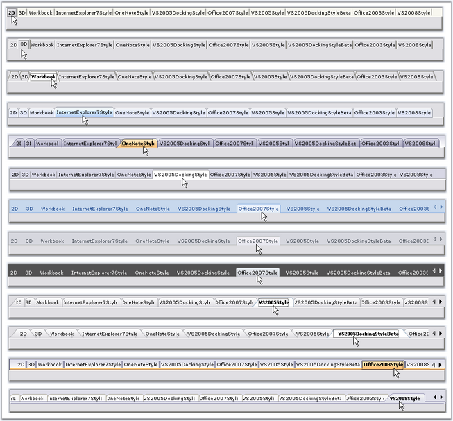
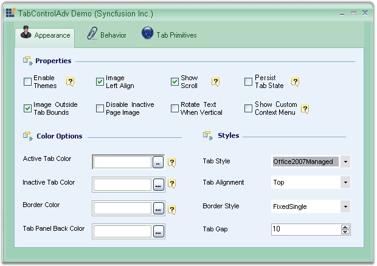
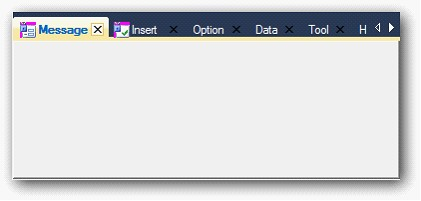

TabControl provides options to customize the TabStyle settings. Styles can be set through TabStyle property.
|
TabControlAdv Property |
Description |
|
TabStyle |
Specifies the look and feel of the Tabcontrol. The options include,
· 2D, · 3D, · Workbook, · InternetExplorer7Style, · OneNoteStyle, · VS2005DockingStyle, · Office2007Style, · VS2005Style, · VS2005DockingStyleBeta, · Office2003Style and · VS2008Style. |
|
[C#]
this.tabControlAdv1.TabStyle = typeof(Syncfusion.Windows.Forms.Tools.TabRendererWorkbookMode); |
|
[VB.NET]
Me.tabControlAdv1.TabStyle = GetType(Syncfusion.Windows.Forms.Tools.TabRendererWorkbookMode) |
Given below are the various TabStyles along with the Office 2007 Style supporting all the three color schemes (Blue, Silver and Black).

Figure 1057: Tab Styles
 Note: We can apply border styles when
TabStyle is set to VS2008Style. Refer Border
for TabControlAdv
topic to know more.
Note: We can apply border styles when
TabStyle is set to VS2008Style. Refer Border
for TabControlAdv
topic to know more.
Custom Color Schemes
Custom colors can also be applied to the TabControlAdv. Use the below code snippet.
|
[C#]
//Set the below code for applying the managed color scheme. this.FormTabControl.TabStyle = typeof(TabRendererOffice2007); this.FormTabControl.Office2007ColorScheme = Office2007Theme.Managed;
Office2007Colors.ApplyManagedColors(this, Color.Green); |
|
[VB.NET]
'Set the below code for applying the managed color scheme. Me.FormTabControl.TabStyle = GetType(TabRendererOffice2007) Me.FormTabControl.Office2007ColorScheme = Office2007Theme.Managed
Office2007Colors.ApplyManagedColors(Me, Color.Green) |

Figure 1058: Custom Color = "Green"
A sample which illustrates CustomTab control and Flat Tabs is available in the below sample location.
..\My Documents\Syncfusion\EssentialStudio\Version Number\Windows\Tools.Windows\Samples\2.0\Tabs Package\Advanced
· VS 2010 Style for TabControlAdv
· TabControlAdv’s TabStyle can be changed to VS2010 style.
· VS2010Style is added to the TabStyle’s collection.

Figure 1059: VS 2010 Style
Add VS 2010 Style for TabControlAdv, by using the following code.
|
[C# .Net] this.tabControlAdv1.TabStyle = typeof(Syncfusion.Windows.Forms.Tools.TabRendererVS2010) |
|
[VB .Net] Me. tabControlAdv1.TabStyle= GetType(Syncfusion.Windows.Forms.Tools.TabRendererVS2010) |